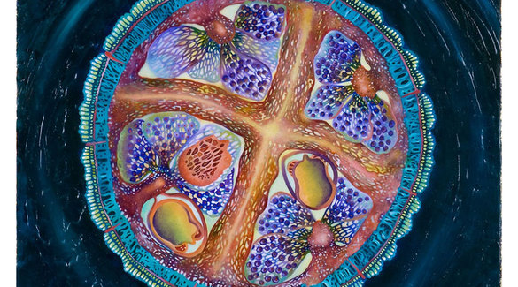

Unnumbered Germs are Seen Swelling-2007

Simply Slumbered The Force In The Seed-2007

The Altar Is Raised-2007
Awards And Shows Main Page Marsha's Bird Art and misc. artBIOLOGICAL PAINTINGS Marsha’s studio practise focuses on the relationship between humanity and nature. It looks into the deeper emotional and metaphysical aspects of this exchange. In these paintings, Marsha uses imagery from the science lab causing her viewer to ponder the scope of shapes. ‘Are these organic cells, planetary clusters, genetic configurations or interstellar dynamics?’ The wide variety of luster does not lead the observer into the spiritual realm of religion as much as the spiritual world of science. Thus, these paintings may appear to have been taken through a microscope – nature scrutinized at the micro level; or is it at the macro level, through a telescope.
Unnumbered Germs are Seen Swelling-2007
Simply Slumbered The Force In The Seed-2007
The Altar Is Raised-2007
Awards And Shows Main Page Marsha's Bird Art and misc. art